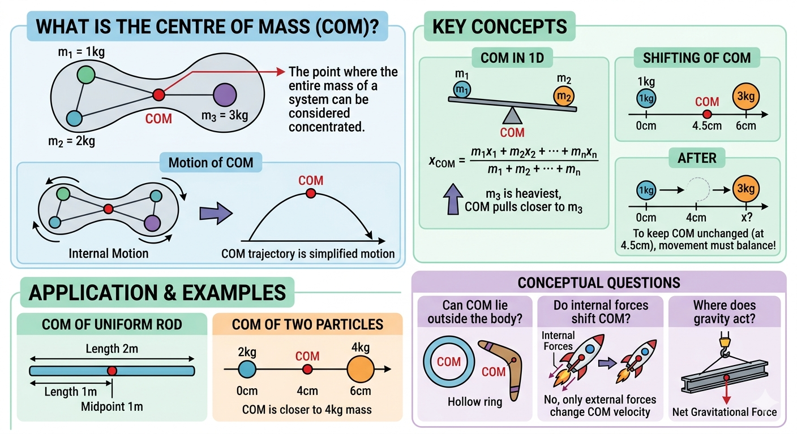

System of Particles and Centre of Mass

Image generated by Google AI
What Is the Centre of Mass of a System of Particles?
Imagine you are carrying a tray full of cups of water. Even if each cup moves slightly, the tray as a whole has a point that “feels” like the center of all that weight combined. In physics, a system of particles works similarly. Instead of tracking every tiny particle, we use the concept of the Centre of Mass (COM), a magical point that behaves as if all the mass were concentrated there.
You might be thinking, “Why not just follow each particle?” Well, if you ever watched a crowded street from a balcony, you would notice that while people zigzag around, the overall flow still has a direction. That is what studying the COM does, it lets you predict the motion of the whole system without worrying about every tiny jiggle. This is especially useful for analyzing things like collisions, explosions, or even multi-stage rockets zooming through space.
And here is a fun twist; COM is not just for neat, rigid objects. It applies to anything from rods and discs to oddly shaped objects. Sometimes, the COM is outside the object itself, think of balancing a boomerang in mid-air. In rotational dynamics, the axis of rotation often passes through the COM because it is the easiest place to pivot.
You might not notice it daily, but your own COM is at work when you walk, run, or balance on one foot. Athletes tweak it for flips and jumps, engineers use it for stable bridges, and astronauts rely on it to navigate spacecraft. Wherever mass moves, COM is quietly calling the shots.
Key Concepts and Definitions
Let us break it down in a way that you can picture in everyday life:
-
Centre of Mass in 1D:
\[ x_{\text{COM}} = \frac{m_1x_1 + m_2x_2 + \cdots + m_nx_n}{m_1 + m_2 + \cdots + m_n} \]Think of it like a seesaw: the heavier side pulls the balance point closer. This formula is a weighted average, you can extend it to two or three dimensions by including y and z coordinates. So, whether you are balancing a plank on your finger or a long tray, the principle is the same.
- Motion of COM: If no external force nudges the system, the COM moves steadily. You could have people running around on a bus, but if you look at the bus as a whole, its COM moves as if no one inside is shifting. Rockets work on the same idea: internal fuel ejections do not push the COM beyond what external forces allow.
- Shifting of COM: When one particle moves, the COM shifts, unless another particle moves just right to cancel it out. Think of balancing a long plank with two friends: if one slides a little, you might need to adjust your position to keep it balanced.
-
COM of Two Particles:
For masses \( m_1 \) and \( m_2 \) at positions \( x_1 \) and \( x_2 \),
\[ x_{\text{COM}} = \frac{m_1x_1 + m_2x_2}{m_1 + m_2} \]The COM always leans toward the heavier mass. If both are equal, it sits right in the middle, like sharing a seesaw evenly with a friend.
-
Conservation of Momentum:
If no net external force acts:
\[ \vec{P}_{\text{total}} = M\vec{v}_{\text{COM}} = \text{constant} \]This is the rule that lets you predict how the COM moves, no matter how chaotic the internal shuffling is, like the predictable glide of a crowd across a plaza, even if everyone moves individually.
Shortcut Concepts
- If you want the COM to stay put, movement of one mass must be balanced by another. Imagine walking across a boat, you naturally shift your weight to keep it from tipping.
- Heavier masses need to move less to balance lighter ones. Think of carrying a backpack: a heavy bag needs only a small shift in position to feel balanced compared to a light one.
- Internal forces alone won’t move the COM. Tug-of-war inside a truck won’t make the truck drift—external forces are the ones that count.
- Always apply conservation of momentum for isolated systems. This helps in multi-body collisions, rocket launches, or watching binary stars orbit each other in the night sky.
- Internal energy changes don’t affect COM motion. Your hands can wave, your legs can run, yet the COM path of your whole body follows external forces, like the steady movement of a trolley despite dancing passengers inside.
Examples
-
COM of two particles:
Picture a 2 kg mass at 0 cm and a 4 kg mass at 6 cm.
\[ x_{\text{COM}} = \frac{2 \cdot 0 + 4 \cdot 6}{2 + 4} = \frac{24}{6} = 4\,\text{cm} \]The COM lies 4 cm from the origin, nearer the heavier particle. It is like a tug-of-war where the stronger side pulls the center toward itself.
- COM of uniform rod: A rod of length 2 m has its COM right at 1 m, its midpoint. This is why a perfectly balanced seesaw does not tip, it is not magic, it is math.
-
Effect of movement on COM:
If a 1 kg block at 0 cm moves to 4 cm, and a 3 kg block at 6 cm moves to \( x \), find \( x \) so the COM stays put:
\[ \text{Initial COM} = \frac{1 \cdot 0 + 3 \cdot 6}{4} = 4.5\,\text{cm} \]\[ \text{Final COM} = \frac{1 \cdot 4 + 3 \cdot x}{4} = 4.5 \Rightarrow x = 4.5 \]Think of it like juggling a seesaw: shifting one mass means adjusting the other to keep balance. This is exactly how robots and athletes maintain stability in motion.
Concept Questions with Explanations
-
Is COM always within the body?
Not necessarily. Hollow rings, boomerangs, or oddly shaped objects often have COM outside the material itself. It is like balancing an empty hoop on your finger, your finger points to the COM, not the material. -
Does gravity act at the COM?
Yes. Hang an object from its COM and watch it balance perfectly. Engineers exploit this principle in cranes, bridges, and pendulums. -
Can COM move if no external force acts?
No. In an isolated system, COM either rests or moves uniformly. Astronauts inside a spacecraft can float around, but the spacecraft’s COM continues on its path unchanged. -
Do internal forces shift COM?
No. Internal forces may shuffle particles, but they cannot move the COM. Rocket fuel ejection changes the rocket’s speed but not the COM of the rocket-fuel system. -
What affects the COM location?
Mass distribution and particle positions decide the COM. Add weight here, shift mass there, and the COM slides accordingly. This is critical in designing vehicles, planes, or even athletic stances for balance.
Super Tips for Solving Fast
- Use the weighted average formula for COM in 1D, 2D, or 3D. It is your “balance point” along each axis.
- Consider each motion individually and apply: COM unchanged \( \Rightarrow \) total weighted position stays constant. Helpful for multi-particle or variable mass systems.
- For symmetric bodies, COM is at the geometric center, but verify for non-uniform density.
- Watch the signs, direction matters! Positive vs negative coordinates can drastically change results.
- Use relative motion to simplify problems. Objects moving toward or away from each other can be analyzed as a single COM problem.
- For continuous bodies, integrate over mass elements; for rotating systems, COM guides torque and angular momentum relationships.
Previous Year Questions (PYQs)
Q1.
Two blocks of masses 10 kg and 30 kg are placed on the same straight line with coordinates (0,0) cm and (x,0) cm, respectively. The block of 10 kg is moved on the same line through a distance of 6 cm towards the other block. The distance through which the block of 30 kg must be moved to keep the position of centre of mass of the system unchanged is:
[JEE, 2022]
(a) 4 cm towards the 10 kg block
(b) 2 cm away from the 10 kg block
(c) 2 cm towards the 10 kg block
(d) 4 cm away from the 10 kg block
Solution:
Let the initial positions be:
Initial COM:
After moving:
New COM:
Equating both COMs:
So the 30 kg block must move 2 cm towards the 10 kg block. The negative sign tells you the direction is opposite the positive axis, direction is everything here, just like when you are steering a bike.
Answer: \( \boxed{\text{c) 2 cm towards the 10 kg block}} \)